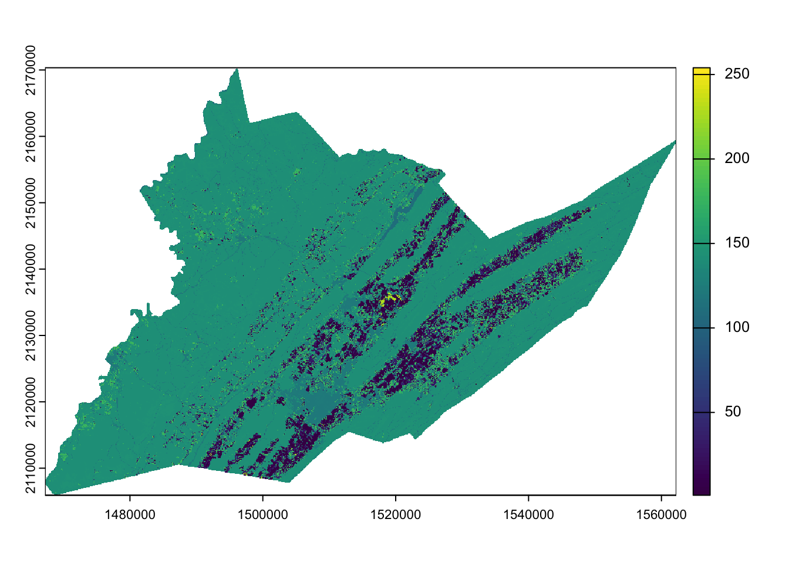
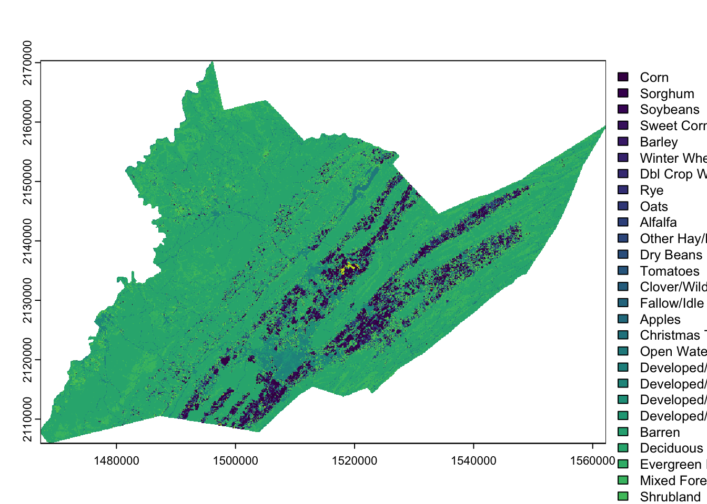
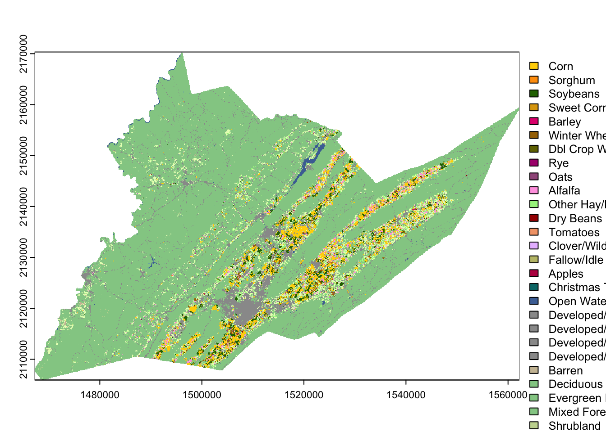
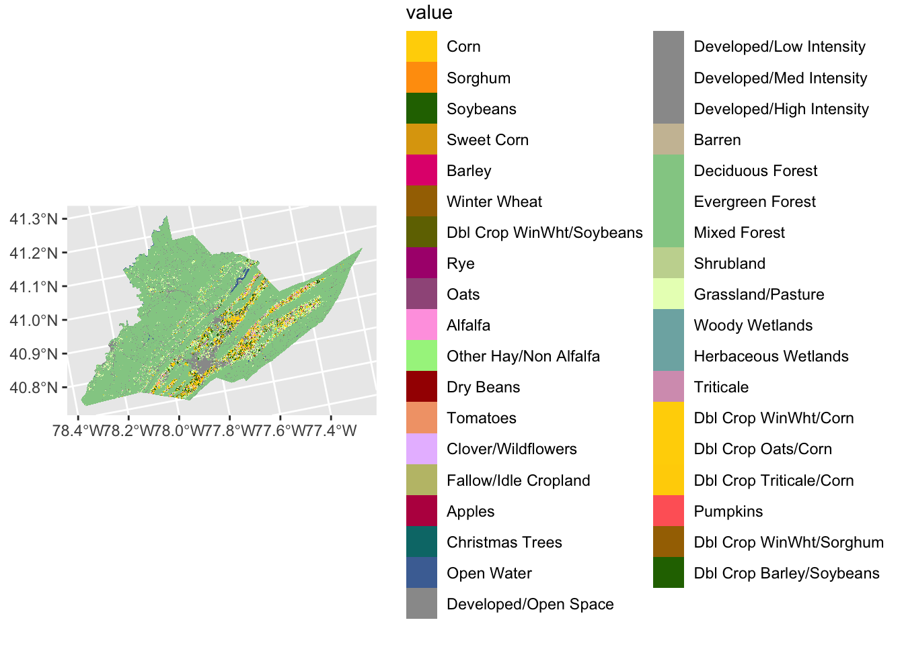
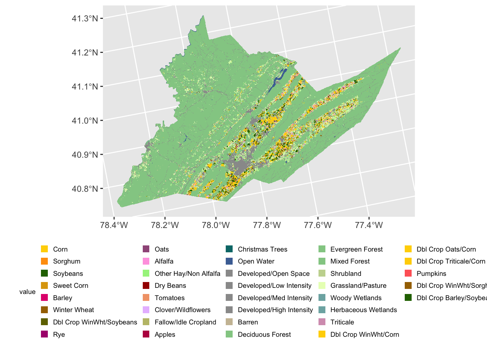

library(dplyr)
library(ggplot2)
library(sf)
library(terra)
library(tidyterra)Visualizing rasters
Here we show how to visualize the cropland data layer (CDL) raster.
First, load the necessary packages. More info on these packages and their installation can be found here.
Read in raster data
Downloaded data from BeeSpatial is packaged as a zipped file ending in .zip. Opening this file, you should find a .tif raster file:
CDL_2021_FIPS_42027.tif
This filename indicates the data type, in this case CDL, the year and the FIPS code that corresponds to the county you selected.
The first thing we will do is use the rast() function to read the .tif file into R as a SpatRaster object. For the code below to work, you must use your own filepath for the .tif file.
centre_cdl <- rast("data/CDL_2021_FIPS_42027.tif") # change the filepath to reflect where you've stored the data
centre_cdlclass : SpatRaster
size : 2147, 3167, 1 (nrow, ncol, nlyr)
resolution : 30, 30 (x, y)
extent : 1467225, 1562235, 2105925, 2170335 (xmin, xmax, ymin, ymax)
coord. ref. : NAD83 / Conus Albers (EPSG:5070)
source : CDL_2021_FIPS_42027.tif
name : Class_Names
min value : 1
max value : 254 An important attribute of spatial data are their Coordinate Reference System or CRS. This information tells us what model of the earth (ex WGS84 or NAD83) is being referenced as well as the units of the coordinates such as decimal degrees.
Rasters downloaded from BeeSpatial inherit their CRS from the raster they were originally extracted from.
Let’s view the CRS for your county cdl:
crs(centre_cdl)[1] "PROJCRS[\"NAD83 / Conus Albers\",\n BASEGEOGCRS[\"NAD83\",\n DATUM[\"North American Datum 1983\",\n ELLIPSOID[\"GRS 1980\",6378137,298.257222101,\n LENGTHUNIT[\"metre\",1]]],\n PRIMEM[\"Greenwich\",0,\n ANGLEUNIT[\"degree\",0.0174532925199433]],\n ID[\"EPSG\",4269]],\n CONVERSION[\"Conus Albers\",\n METHOD[\"Albers Equal Area\",\n ID[\"EPSG\",9822]],\n PARAMETER[\"Latitude of false origin\",23,\n ANGLEUNIT[\"degree\",0.0174532925199433],\n ID[\"EPSG\",8821]],\n PARAMETER[\"Longitude of false origin\",-96,\n ANGLEUNIT[\"degree\",0.0174532925199433],\n ID[\"EPSG\",8822]],\n PARAMETER[\"Latitude of 1st standard parallel\",29.5,\n ANGLEUNIT[\"degree\",0.0174532925199433],\n ID[\"EPSG\",8823]],\n PARAMETER[\"Latitude of 2nd standard parallel\",45.5,\n ANGLEUNIT[\"degree\",0.0174532925199433],\n ID[\"EPSG\",8824]],\n PARAMETER[\"Easting at false origin\",0,\n LENGTHUNIT[\"metre\",1],\n ID[\"EPSG\",8826]],\n PARAMETER[\"Northing at false origin\",0,\n LENGTHUNIT[\"metre\",1],\n ID[\"EPSG\",8827]]],\n CS[Cartesian,2],\n AXIS[\"easting (X)\",east,\n ORDER[1],\n LENGTHUNIT[\"metre\",1]],\n AXIS[\"northing (Y)\",north,\n ORDER[2],\n LENGTHUNIT[\"metre\",1]],\n USAGE[\n SCOPE[\"Data analysis and small scale data presentation for contiguous lower 48 states.\"],\n AREA[\"United States (USA) - CONUS onshore - Alabama; Arizona; Arkansas; California; Colorado; Connecticut; Delaware; Florida; Georgia; Idaho; Illinois; Indiana; Iowa; Kansas; Kentucky; Louisiana; Maine; Maryland; Massachusetts; Michigan; Minnesota; Mississippi; Missouri; Montana; Nebraska; Nevada; New Hampshire; New Jersey; New Mexico; New York; North Carolina; North Dakota; Ohio; Oklahoma; Oregon; Pennsylvania; Rhode Island; South Carolina; South Dakota; Tennessee; Texas; Utah; Vermont; Virginia; Washington; West Virginia; Wisconsin; Wyoming.\"],\n BBOX[24.41,-124.79,49.38,-66.91]],\n ID[\"EPSG\",5070]]"We can see that our CDL raster is using the North American Datum of 1983 as its model for the shape of the earth. Our two-dimensional projection model of earth’s 3d surface is Alber’s Equal Area and the units of our coordinates are in meters.
Visualize raster data
We can visualize our county CDl raster by using the base R plot function:
plot(centre_cdl)
We’ll talk about other plotting options such as using the packages ggplot2 and tidyterra a little later.
Display CDL class names
Right now we are viewing the raw numeric codes of the CDL. These codes mean something: the crop land cover class. We can tell terra what these codes mean so that it will show the land cover class names rather than the raw values. The information for these land cover values (along with their colors) are stored in a color table downloadable here.
cdl_colormap <- read.csv("data/cdl_colormap.csv") # read in the table from your download location
head(cdl_colormap) # use `head()` to take a look at the first 5 rows of cdl_colormap value red green blue alpha class_name
1 0 0 0 0 255 Background
2 1 255 211 0 255 Corn
3 2 255 38 38 255 Cotton
4 3 0 168 228 255 Rice
5 4 255 158 11 255 Sorghum
6 5 38 112 0 255 SoybeansWe set the levels of the raster to the land cover class names using the relevant elements of cdl_colormap: ‘value’ (column 1) and ‘class_name’ (column 6).
levels(centre_cdl) <- cdl_colormap[,c(1,6)]
plot(centre_cdl) # plot, as above, but now R knows what the numeric values mean
Then we can recolor the classes to match the traditional NASS CDL style.
{kind=link}
This color information is stored in columns 2-5 of the cdl_colormap table, representing red, green, blue, and alpha (transparency) values. We use the function coltab to supply the color map with this information in columns that are in this specific order, plus the corresponding (raw) raster value as the first column (they are already set up as the first 5 columns of cdl_colormap)
coltab(centre_cdl) <- cdl_colormap[,1:5]
plot(centre_cdl) # plot, as above, but now R knows what the numeric values mean and assigns colors
Let’s look at some customization options. To do this, we’ll be using the ggplot2 tidyterra packages. ggplot2 plots a little differently from base R. Data elements are layered on top of a base plot using + signs and functions that start with geom_. Here, we’re starting with a blank base plot and adding the spatraster object using geom_spatraster().
ggplot() + # blank base plot
geom_spatraster(data = centre_cdl, aes(fill = class_name)) # add the spatraster layer<SpatRaster> resampled to 500797 cells.
The legend is now quite large but can be easily modified using ggplot2 theme functions.
ggplot() +
geom_spatraster(data = centre_cdl, aes(fill = class_name)) +
theme(legend.title = element_text(size = 7), # make legend title smaller
legend.text = element_text(size = 7), # make legend text smaller
legend.key.size = unit(0.25, 'cm'), #make legend color keys smaller
legend.position="bottom") # move legend to the bottom of the plot<SpatRaster> resampled to 500797 cells.
Write out raster files
We can save our raster files as a .tif using writeRaster. For the CDL raster we will save the data in “INT1U” format which will also save the class names and color table.
writeRaster(centre_cdl, "data/centre_county_cdl_2021.tif", overwrite=TRUE, datatype="INT1U")